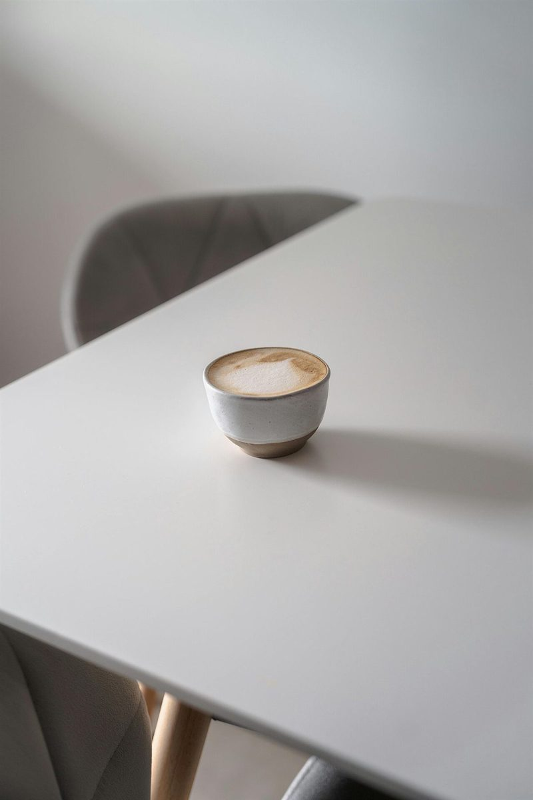
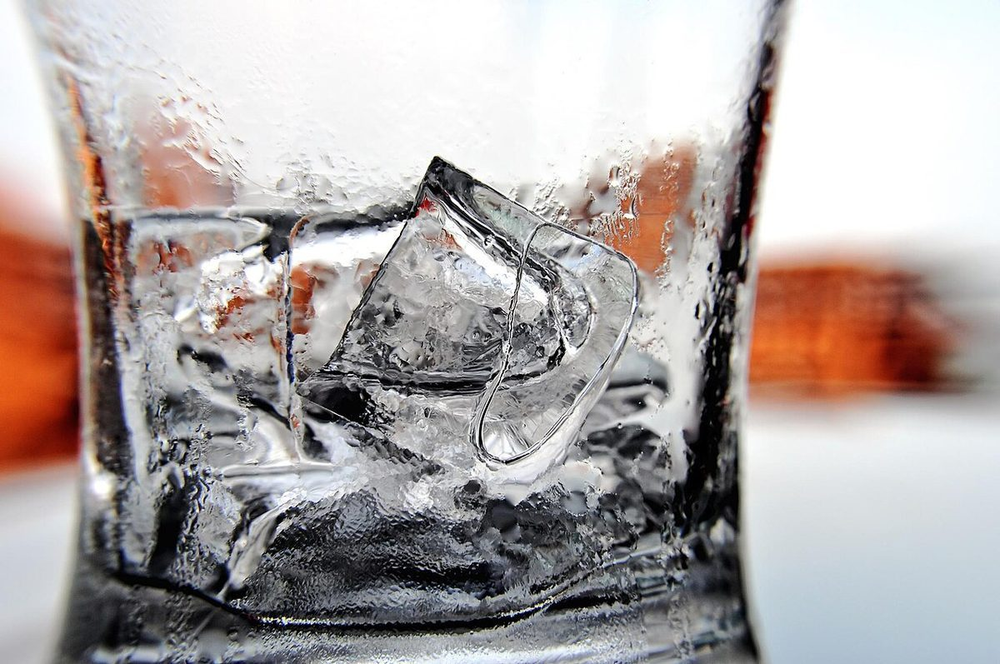

カフェ / 長崎県平戸市
PEABERRY
長崎県平戸市田平町にあるカフェ「PEA BERRY」のご案内ページです。営業時間やメニューなど詳しいことは準備中。まずはInstagramをのぞいてみてください。

制作側の連想
「ピー」から、ひと試合ぶんの笛へ
屋号の由来は分かりません。制作側は「PEA」を「ピー」と読み、審判の笛の音を連想しました。そこでこのサイトは、試合の始まり(0分)から終わり(90分)までを5つのページに見立て、笛の吹き方で区切っています。お店の理念・由来とは無関係な、制作側の連想です。
ベンチの上の小物(イメージ)
撮影地不明の、ただの写真たち。
写真は平戸市やお店のものではありません。形や光のイメージで選んだ、撮影地不明のフリー素材です。




ご案内
確認できていること
| 所在地 | 〒859-4825 長崎県平戸市田平町山内免３４６−１ |
|---|---|
| 電話 | なし |
| 営業時間 | 準備中 |
| 定休日 | 準備中 |
| ご予約 | 準備中 |
| 駐車場 | 準備中 |
| SNS | Instagram @peaberry_hirado |